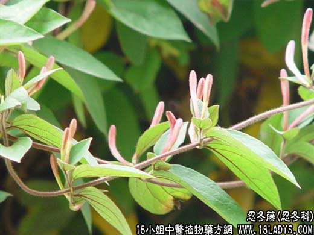

【中药概述】
忍冬藤为忍冬科藤本植物忍冬带叶的嫩枝。甘、苦寒。归胃、肝经。
1．清热解毒：用于上呼吸道感染、流行性感冒，荨麻疹，大头瘟，热毒疮疡，疔肿等，可配清热解毒药同用。
2．利痹通经：用于风湿痹痛，关节屈伸不利等。配桑枝，石膏，知母，防己，薏以等清热通络之品。
【药效鉴别】
金银花藤能通经活络，祛风除经络风热，对痹痛化热者用之颇宜，可配防己，秦艽等。
【临证应用】
主风湿性关节炎，属风湿热痹型，关节红肿热痛，疼痛剧烈，活动受限，发热恶风。忍冬藤15g，葛根20g，黄芩10g，黄连，赤芍，知母6g，水煎服，每剂煎服2次，日1剂。
【化学成分】
含忍冬甙、黄酮、生物碱等。
【用量用法】
本品12——26g，水煎服，或入剂。
【附】
银花子（为本品之果实）性凉。功与金银花相似；叶（为本品之叶）功与金银花相似但较弱。
【注】
忍冬藤寄生，寄生于忍冬藤上。甘苦。归肺、胃、大肠经。疏风清热，消肿解毒。